Portfolio: Graphic Design and Game UI
I consider Graphic Design a hobby and enjoy working on concepts for game menus. See some of my doodles below!
(P.S. this very website could be considered part of this portfolio!)

The "MunoPhone" for Rivals of Aether, a fully-functioning training menu made within the game's constraints that can be added to Workshop Characters. It lets you view character information, review patches and frame data, and activate cheat codes.
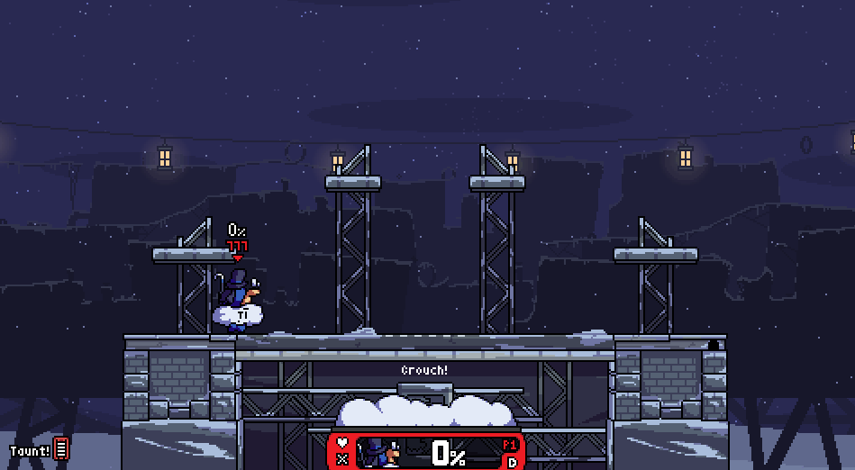Higher-fidelity demo
The menus I made for my small Godot game "The Too-Helpful Knight". They're simple, but also coded from scratch rather than using Godot's built-in button nodes (for more control over inputs).
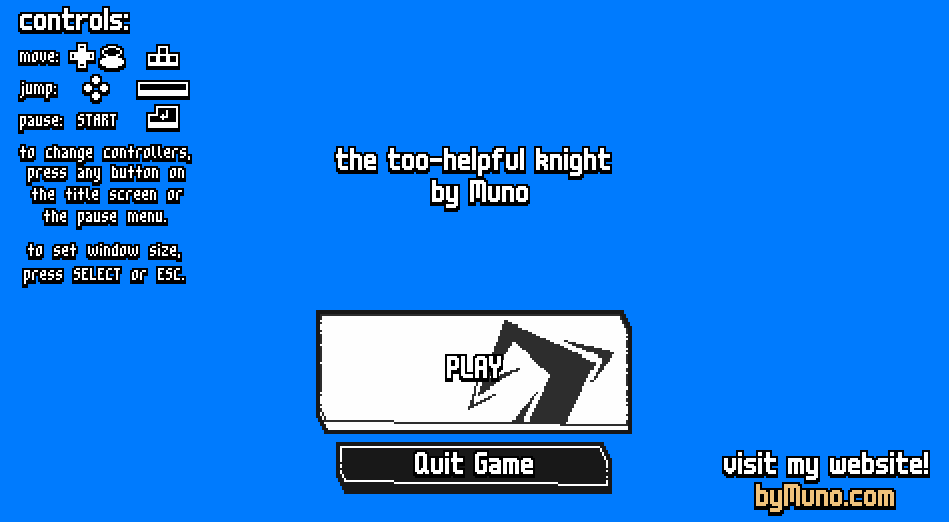Higher-fidelity demo
A Smash Bros character select mockup.
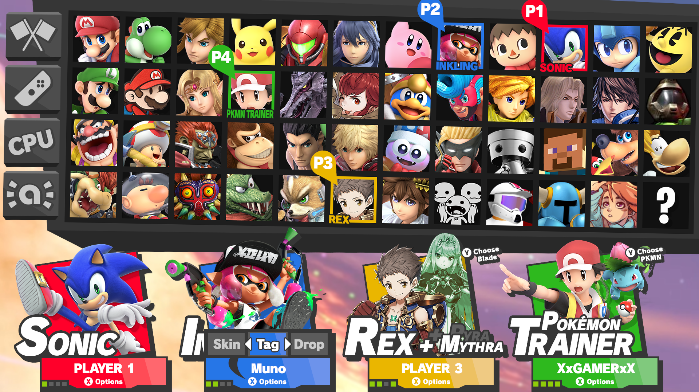
A mockup of a new menu flow for Smash Bros, designed to be easier to navigate.
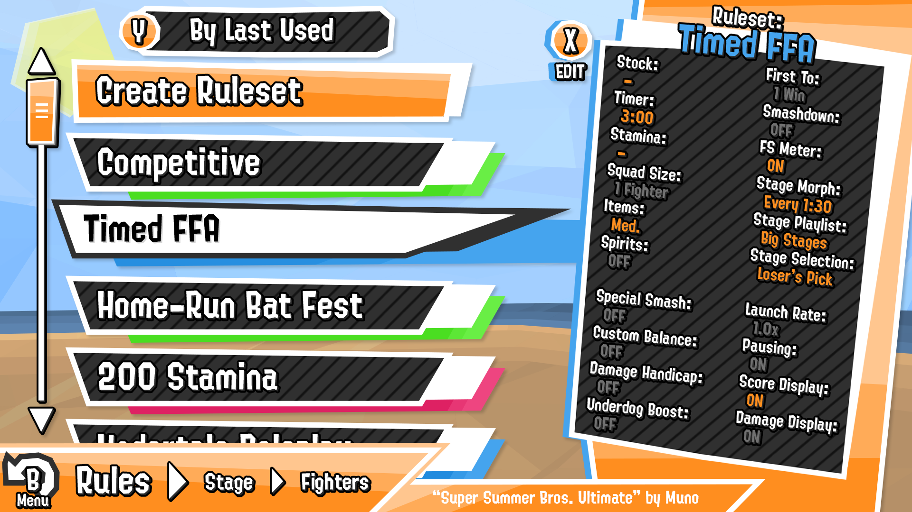 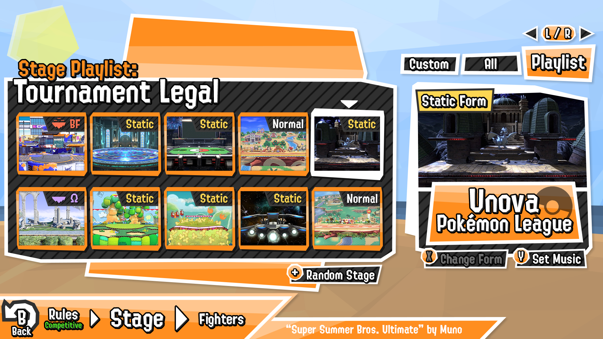 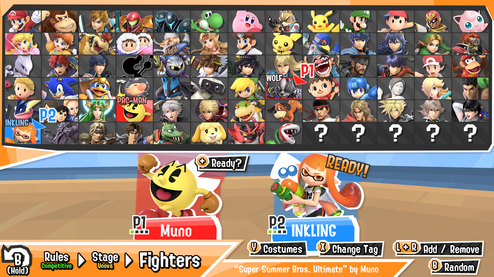
A stage list image commissioned for a local Smash Ultimate tournament.
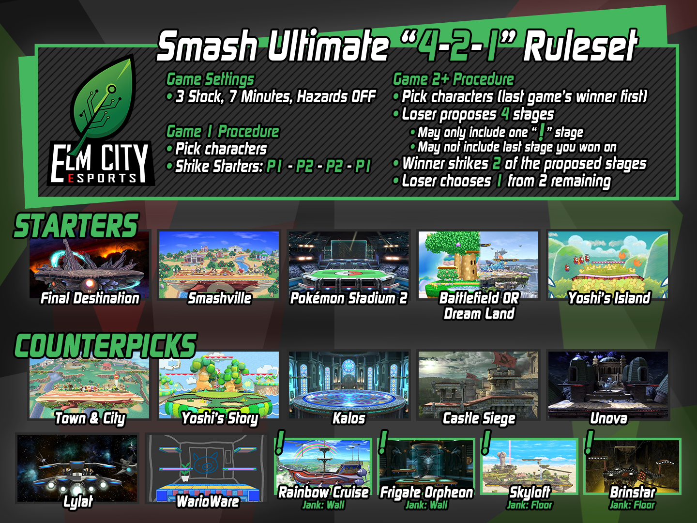
Mockups of in-game character UI for a Smash Bros game.
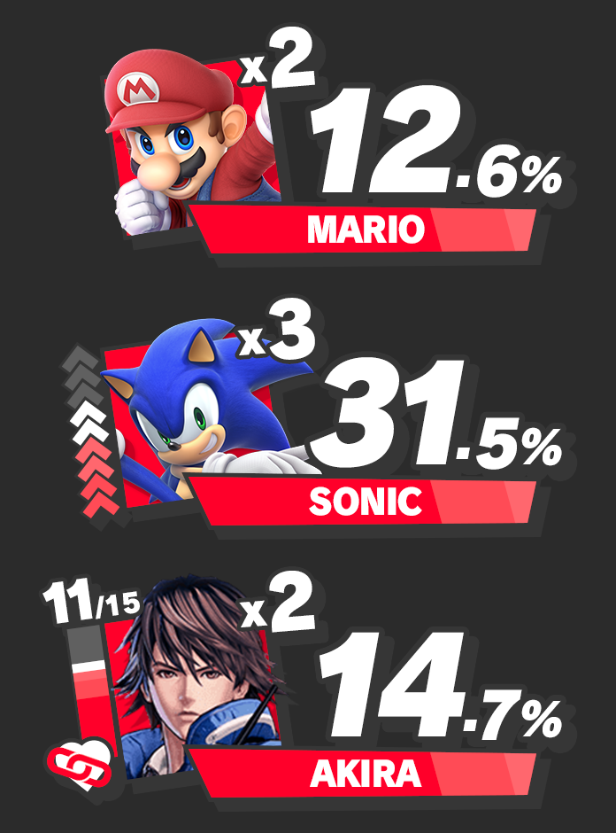
A guide for designing cool gameplay mechanics in custom Rivals of Aether characters.

Branding done for my Smash Ultimate discord server and its "World Smash" tournament series.
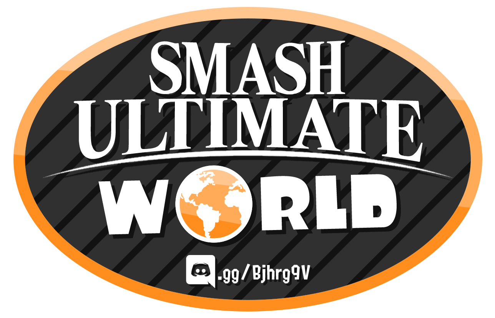 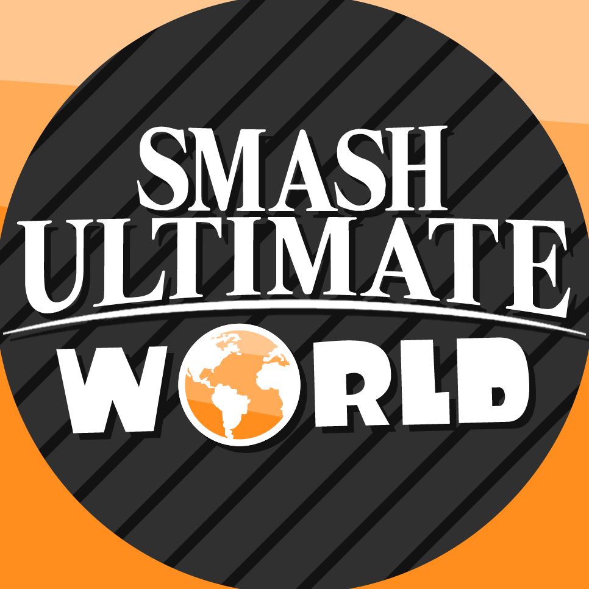 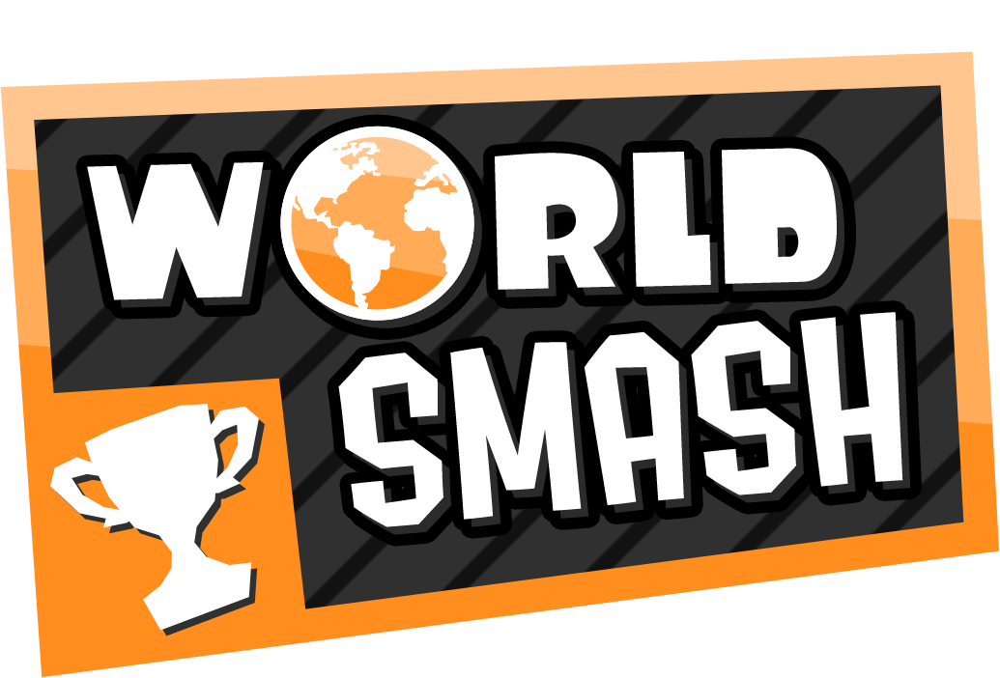
A selection of miscellaneous Smash Bros menu mockups.
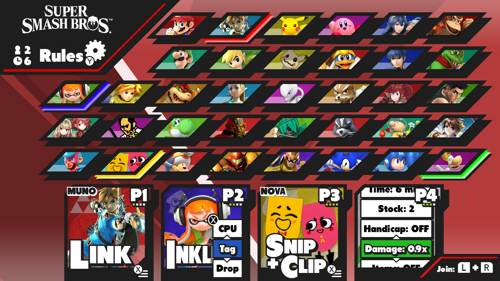 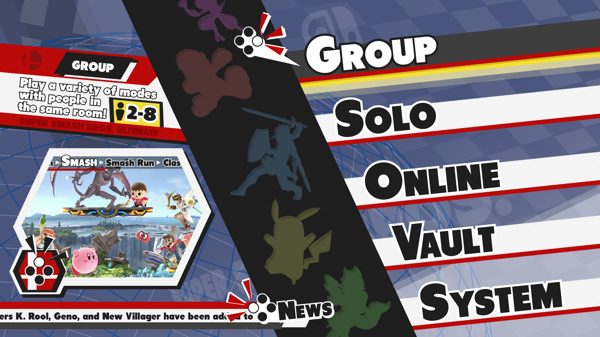 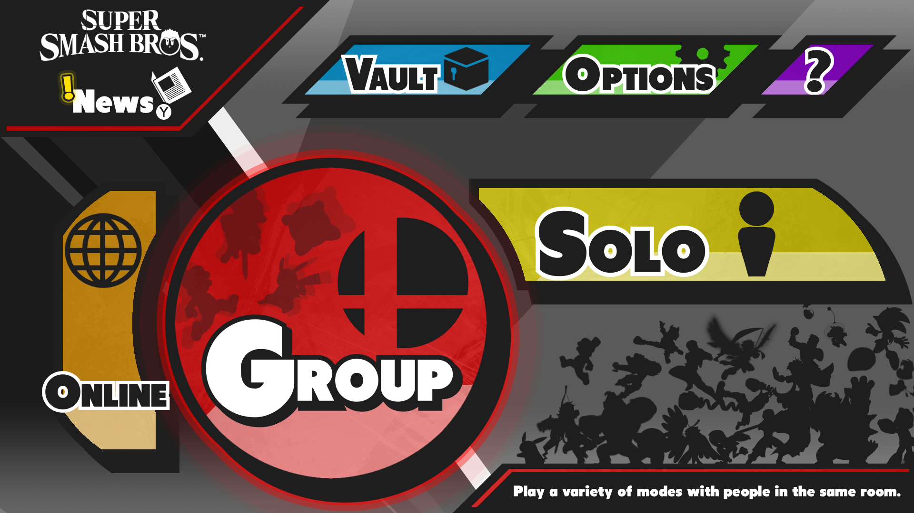
An illustrated concept for a Minecraft character in Smash Bros, which predates the character's official inclusion as well as my RoA character (and was pretty different from both).